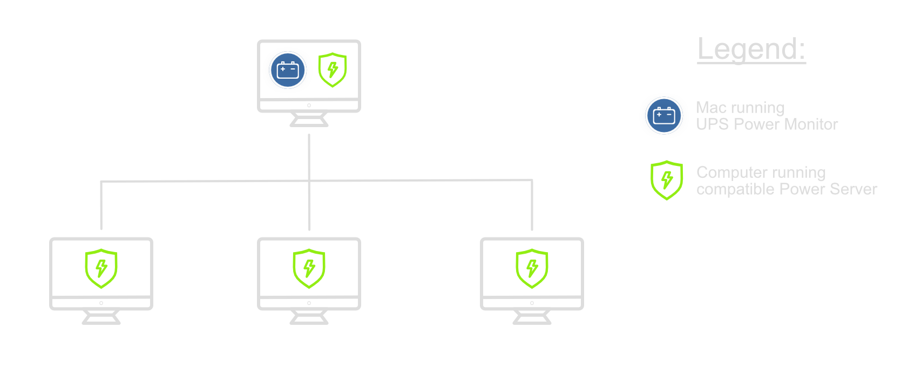
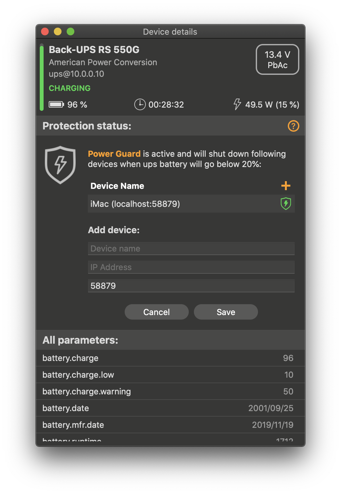

UPS Power Monitor
Power Guard (Beta)
⚠️ Power Server on macOS 12.3 ⚠️
In macOS 12.3 Apple removed support for Python 2 which was required by the initial version of the Power Server. Unfortunately Python 3 is not enabled by default as well and it could lead to some issues. If your UPS Power Monitor instance cannot access Power Server, please try the following steps.
1. Uninstall the current installation of Power Server using Terminal:
/bin/bash -c \ "$(curl -fsSL https://raw.githubusercontent.com/dniklewicz/UPSPowerHelper/master/uninstall_mac.sh)"
2. Install the most recent version of the Python 3 from the official Python website.
3. System restart is recommended at this point.
4. Install the current version of Power Server compatible with Python 3 (for remote client please use this command) without sudo:
/bin/bash -c \ "$(curl -fsSL https://raw.githubusercontent.com/dniklewicz/UPSPowerHelper/master/install_mac_localonly.sh)"
5. Test if the Power Server is reachable in Terminal:
curl http://127.0.0.1:58879/info
The output should look like this:
{"version": "2.2", "accessibility": "localOnly"}
6. Restart the Mac.
7. If UPS Power Monitor still cannot reach the Power Server, please try to start it manually:
python3 ~/.upspowerhelper/upspowerhelper.py
and then please repeat the step 5. (using another Terminal window or tab as the first one will be blocked) to check if Power Server is up and running.
8. If there were no errors when launching the server in the step above, probably additional Command Line Tools are required to run the python scripts in the background:
xcode-select --install
9. Repeat the steps 4 and 5
10. If the server is still unreachable, please run the following command and restart the Mac:
sudo xcode-select --reset
In case of further problems please reach out to us and we do our best to resolve the issue. Screenshots of the output from steps 4, 5 and 7 and command python3 --version will be extremely helpful!
What is Power Guard?
Power Guard is a service which protects your devices and is a part of the UPS Power Monitor application. Please note that the service is in Beta stage and in case of any issues please contact us by email via link on the bottom on this page.
How does it work?
UPS Power Monitor requires compatible Power Server, which is an additional helper tool, in order to shutdown the Mac. Such power server can be installed on the Mac running UPS Power Monitor or any other Mac in the same network. Basic concept is presented on the following diagram.
Installation
How to configure Power Guard and protect my devices?
Step 1: Install Power Server
It is very simple. On macOS, you can install a free, open source server by entering one of the following commands into Terminal.app:
Option 1: Local access only (recommended)
This will install the power server accessible only by the UPS Power Monitor app installed on the same Mac. With this option, you need to use localhost or 127.0.0.1 as an IP Address in Step 2.
/bin/bash -c \ "$(curl -fsSL https://raw.githubusercontent.com/dniklewicz/UPSPowerHelper/master/install_mac_localonly.sh)"
Option 2: Remote access from the local network (advanced)
This will install the power server accessible only by the UPS Power Monitor applications installed on other Mac in the local network. It is recommended to configure a firewall in order to block unauthorized traffic trying to remotely shut down you Mac.
/bin/bash -c \ "$(curl -fsSL https://raw.githubusercontent.com/dniklewicz/UPSPowerHelper/master/install_mac_remote.sh)"
By default the helper tool is listening on port 58879. Once the Power Server is installed, you can setup protection in the UPS Power Monitor app. In order to do that, you need to click the UPS from the list and add your Mac's name and IP address. If both the UPS Power Monitor and the Power Server helper tool operate on the same machine, localhost can be used instead of IP address.
Step 2: Setup protection in UPS Power Monitor application
|  |
Sample setup for local protection:1. Select UPS form the list. 2. Click "Add first device" button 3. Provide protected device's data:
4. Click Save button. 5. Wait for the green shield icon. That's it, your Mac is protected! |
How to uninstall Power Server?
In order to fully remove the power server, please type the following into the Terminal.app:
/bin/bash -c \ "$(curl -fsSL https://raw.githubusercontent.com/dniklewicz/UPSPowerHelper/master/uninstall_mac.sh)"
Can I protect my Mac with just the UPS Power Monitor?
No, UPS Power Monitor is not able to shut down your Mac without using compatible Power Server helper tool.
Installation on Debian and SysV compatible systems. (sudo required)
This will install the power server accessible only by the UPS Power Monitor applications installed on Debian-compatible system in the local network. It is recommended to configure a firewall in order to block unauthorized traffic trying to remotely shut down your system.
sudo /bin/bash -c \ "$(curl -fsSL https://raw.githubusercontent.com/dniklewicz/UPSPowerHelper/master/debian/install_debian_remote.sh)"
By default the helper tool is listening on port 58879. Once the Power Server is installed, you can setup protection in the UPS Power Monitor app. In order to do that, you need to click the UPS from the list and add your device's name and IP address.
Uninstall Power Helper on Debian and SysV compatible systems. (sudo required)
This will uninstall the power server from the Debian-compatible system in the local network.
/bin/bash -c \ "$(curl -fsSL https://raw.githubusercontent.com/dniklewicz/UPSPowerHelper/master/debian/uninstall_debian.sh)"
Need help?
Send us an Email
Send us details of your issue, preferable with screenshot and any other data which can help us to deal with the problem as soon as we can.